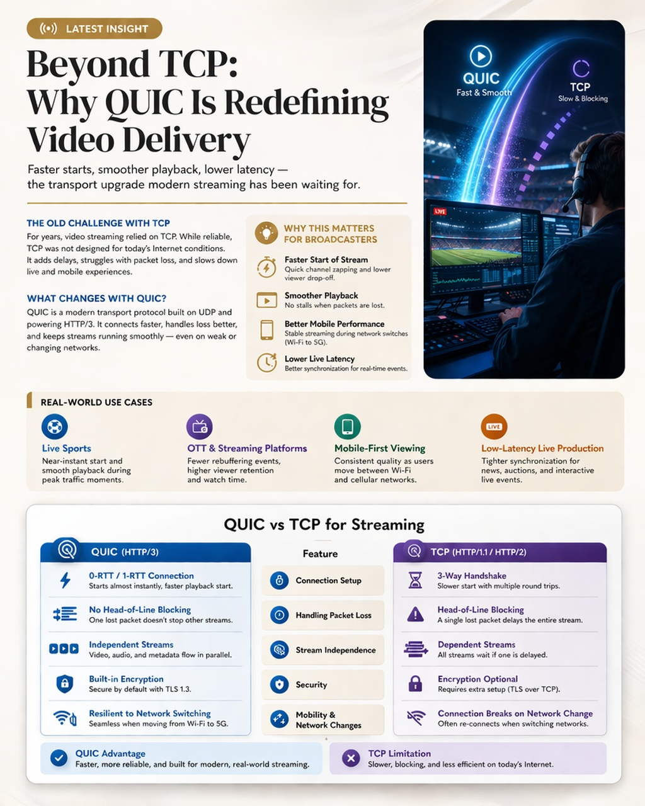

Latest Insights
View all →Original Streamic analysis on broadcast automation, IP infrastructure, cloud production, and editorial operations — selected for depth, not noise.
Beyond TCP: Why QUIC Is Redefining Video Delivery
Faster video start, fewer buffering issues, and smoother playback — even on weak networks. HTTP/3 and QUIC are quietly improving streaming performance across OTT platforms and live broadcasting.
For years, streaming relied on TCP — the same technology behind web browsing. It works, but it struggles with modern mobile and high-demand video traffic. QUIC improves this by enabling faster connections, better handling of network issues, and smoother playback — even when users switch between Wi-Fi and mobile networks.



The Streamic Intelligence
In-depth coverage of playout, MAM/PAM, archive, cloud production, Adobe workflows, SMPTE standards, and AI-driven media operations.